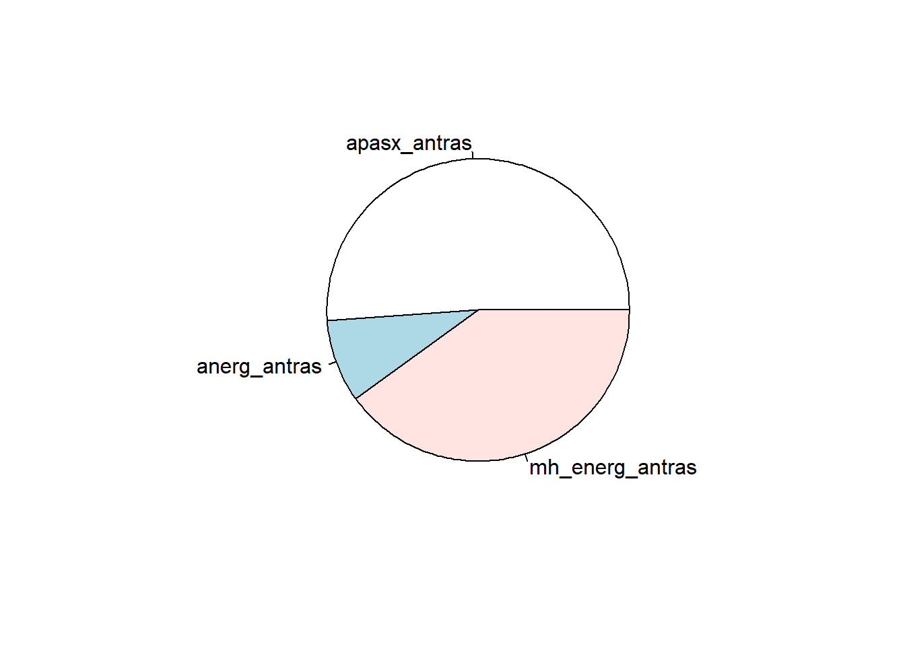
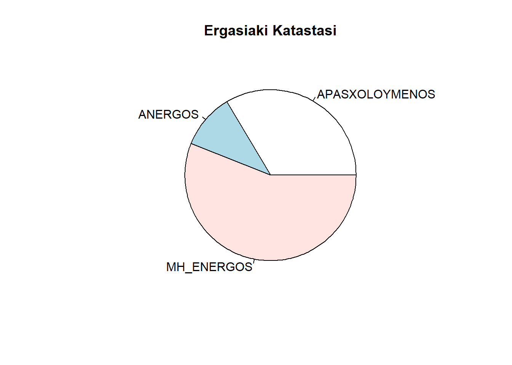
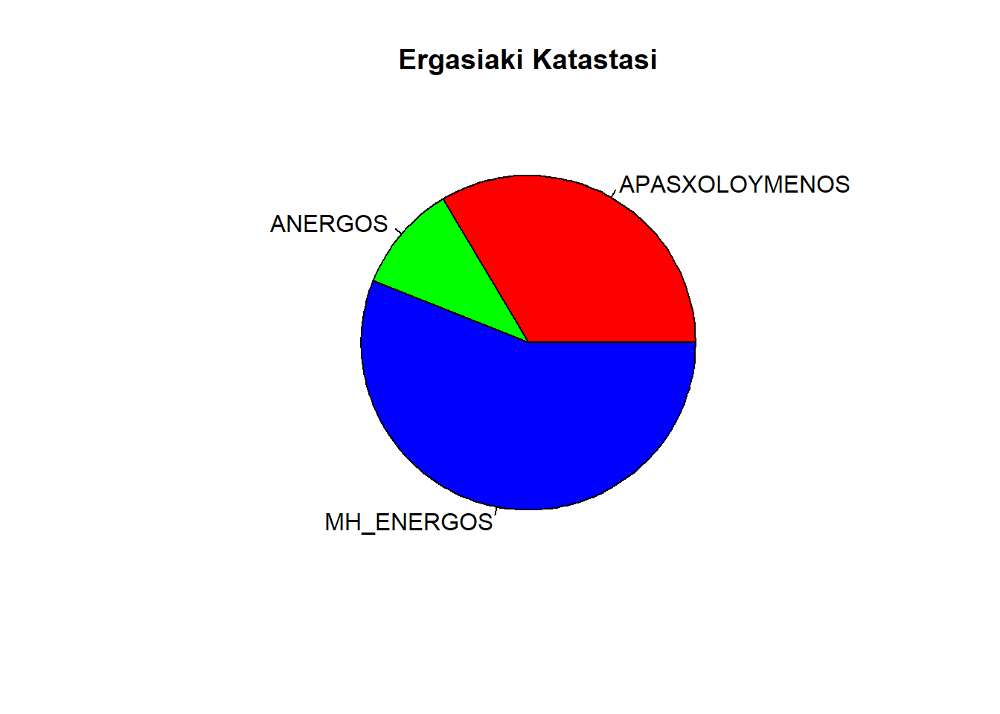
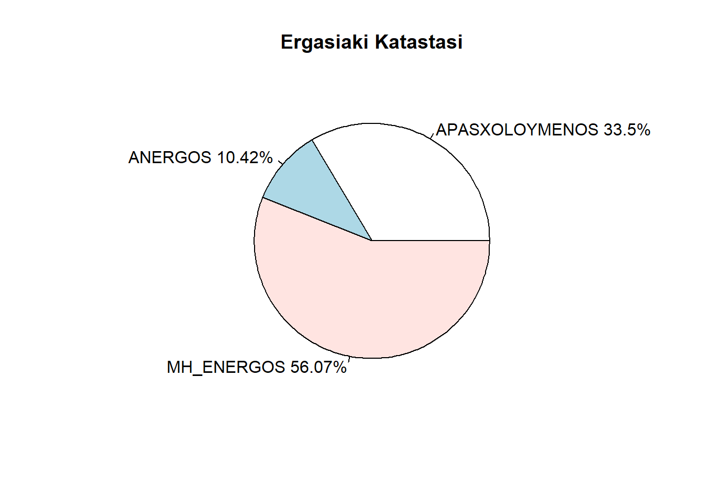

rm(list = ls())Κυκλικό διάγραμμα
Υπάρχουν φορές που μπορεί να μην μας απασχολεί τόσο η σύγκριση των συχνοτήτων των τιμών μεταξύ τους, αλλά με το σύνολο. Μπορεί να μας απασχολεί να απεικονίσουμε την σχέση της κάθε εργασιακής κατάστασης μιας γυναίκας (απασχολούμενη, άνεργη, μη ενεργή) σε σχέση με το σύνολο των γυναικών. Δηλαδή να απαντήσουμε στα ερωτήματα «Τι μέρος των γυναικών εργάζονται;», «Τι μέρος των γυναικών είναι άνεργες;» κτλ. Το κυκλικό διάγραμμα (ή πίτα) είναι ιδανικό γι’ αυτή τη δουλειά.
Όπως ανέκαθεν, διαγράφουμε τις παλιές μεταβλητές και προχωράμε:
Από τη Γενική Γραμματεία Ισότητας αντλούμε κάποιες πληροφορίες σχετικά με την εργασιακή απασχόληση το Δ’ τρίμηνο του 2018 ανά φύλο. Θα φτιάξουμε αρχικά ένα γρήγορο κυκλικό διάγραμμα που να απεικονίζει την εργασιακή κατάσταση των αντρών, δηλαδή να δείχνει πόσοι άντρες είναι απασχολούμενοι, πόσοι άνεργοι και πόσοι μη ενεργοί σε σχέση με το σύνολο των αντρών. Για να γίνει αυτό στην θα χρειαστούμε την λίστα με τα αντίστοιχα νούμερα (posa) και φυσικά τι αντιπροσωπεύει το κάθε ένα (etiketes):
posa <- c(2249.7, 388.3, 1760.6)
etiketes <- c("apasx_antras", "anerg_antras", "mh_energ_antras")Η πίτα είναι έτοιμη να φτιαχτεί:
pie(posa, labels = etiketes)
Θα κάνουμε κι ένα επιπλέον κυκλικό διάγραμμα που να αφορά τις γυναίκες. Θα μπορούσαμε να την καταχωρήσουμε εύκολα πάλι μέσω της συνάρτησης c(), όμως θα επιλέξουμε να την αντλήσουμε από έναν πίνακα για να δοθεί μια γενικότητα στη μέθοδο και για να φρεσκάρουμε τις τεχνικές που μάθαμε στην υποερνότητα Νέα λίστα.
Θα σχηματοποιούμε πίνακα και μετά θα επιχειρήσουμε να αντλήσουμε από αυτόν τις πληροφορίες που θέλουμε. Κατά τα γνωστά (βλ. υποενότητα Κατασκευή πίνακα) έχουμε:
filo <- c("gynaika", "andras")
apasx <- c(1584, 2249.7)
anerg <- c(492.8, 388.3)
mh_energ <- c(2650.9, 1760.6)και τέλος:
Apasxolisi <- data.frame(FYLO=filo, APASXOLOYMENOS=apasx, ANERGOS=anerg, MH_ENERGOS=mh_energ)
Apasxolisi FYLO APASXOLOYMENOS ANERGOS MH_ENERGOS
1 gynaika 1584.0 492.8 2650.9
2 andras 2249.7 388.3 1760.6όπου τα νούμερα δίνονται σε χιλιάδες.
Από αυτόν τον πίνακα θα πάρουμε τα δεδομένα που χρειαζόμαστε, χωρίς να χρειαστεί να τα εισάγουμε εκ νέου. Έτσι, αρχικά αποκόπτουμε από τον πίνακα Apasxolisi το κομμάτι με τις μετρήσεις που μας ενδιαφέρει ν’ απεικονίσουμε στο κυκλικό διάγραμμα:
Apasxolisimetr <- Apasxolisi[1 , c(2:4)]Και ακολούθως μετατρέπουμε σε λίστα αυτές τις μετρήσεις (βλ. τον ψυχαναγκασμό της R και στην υποενότητα Ισομέρεια Shannon):
apasxG <- unlist(Apasxolisimetr)κι αποκτάμε την λίστα με τον αριθμό των γυναικών ανά εργασιακή κατάσταση.
Με την εντολή:
katastasi <- colnames(Apasxolisimetr)φτιάχνουμε μια λίστα ονόματι katastasi, η οποία περιέχει τους τίτλους από τις στήλες του πίνακα.
Η πίτα είναι έτοιμη να φτιαχτεί! Δίνουμε την εντολή:
pie(apasxG, labels = katastasi, main = "Ergasiaki Katastasi")
οπότε έχουμε ένα κυκλικό διάγραμμα, που:
- καταγράφει τα ποσά της λίστας
apasxG, - δίπλα από το κάθε κομμάτι της πίτας έχει ετικέτα τα στοιχεία της λίστας
katastasi(labels = katastasi), - έχει τίτλο
Ergasiaki Katastasi(main = "Ergasiaki Katastasi).
Κάποιοι μπορεί να δυσαρεστηθούν από τα ξεθωριασμένα χρώματα της πίτας. Αυτοί θα ικανοποιηθούν με την συνάρτηση rainbow(). Γράφοντας σαν παράμετρο της πίτας col = rainbow(★★★)θα χρησιμοποιηθούν ★★★ σε πλήθος χρώματα του ουράνιου τόξου για τον χρωματισμό της. Συγκεκριμένα αν γράψουμε:
pie(apasxG, labels = katastasi, main = "Ergasiaki Katastasi", col = rainbow(3))
θα έχουμε την ίδια πίτα με πριν, απλά θα χρησιμοποιηθούν 3 χρώματα του ουράνιου τόξου για την βαφή της.
Αν θέλουμε να καταγράφονται και τα αντίστοιχα ποσοστά στις ετικέτες, τότε θα χρησιμοποιήσουμε την συνάρτηση paste(), για να κολλήσουμε στις ετικέτες (labels) τα ποσοστά. Έτσι, αρχικά υπολογίζουμε τα αντίστοιχα ποσοστά:
apasxGp <- round(apasxG/sum(apasxG)*100, digits = 2)όπου η συνάρτηση round() στρογγυλοποιεί τα αποτελέσματα κρατώντας το πολύ δύο δεκαδικά ψηφία (digits = 2). Επίσης τα οποία πολλαπλασιάσαμε με 100, ώστε να μην είναι σε δεκαδική μορφή.
Ακολούθως γράφουμε διαδοχικά:
katast_pososta <- paste(katastasi, apasxGp, sep = " ")
katast_pososta <- paste(katast_pososta, "%", sep = "")ώστε:
- αρχικά να ενωθούν οι ενδείξεις των λιστών
katastasiκαιapasxGpμε κενό ανάμεσά τους (sep = " ") - και ακολούθως να μπει το σύμβολο «
%» δίπλα από το αντίστοιχο νούμερο χωρίς κενό ανάμεσά τους (sep = "").
Τέλος, γράφουμε:
pie(apasxG,labels = katast_pososta,main = "Ergasiaki Katastasi")
κι έχουμε την πίτα με ετικέτες τους προηγούμενους τίτλους μαζί με τα ποσοστά. Προφανώς τα έντονα χρώματα μπορούν να χρησιμοποιηθούν και πάλι μέσω της επιλογής col = rainbow(3).
Συνολικά ο κώδικας που γράψαμε είναι ο κάτωθι:
rm(list = ls())
posa <- c(2249.7, 388.3, 1760.6)
etiketes <- c("apasx_antras", "anerg_antras", "mh_energ_antras")
pie(posa, labels = etiketes)
filo <- c("gynaika", "andras")
apasx <- c(1584, 2249.7)
anerg <- c(492.8, 388.3)
mh_energ <- c(2650.9, 1760.6)
Apasxolisi <- data.frame(FYLO=filo, APASXOLOYMENOS=apasx, ANERGOS=anerg, MH_ENERGOS=mh_energ)
Apasxolisi
Apasxolisimetr <- Apasxolisi[1 , c(2:4)]
apasxG <- unlist(Apasxolisimetr)
katastasi <- colnames(Apasxolisimetr)
pie(apasxG, labels = katastasi, main = "Ergasiaki Katastasi")
pie(apasxG,labels = katastasi,main = "Ergasiaki Katastasi", col = rainbow(3))
apasxGp <- round(apasxG/sum(apasxG)*100, digits = 2)
katast_pososta <- paste(katastasi,apasxGp,sep = " ")
katast_pososta <- paste(katast_pososta, "%", sep = "")
pie(apasxG,labels = katast_pososta,main = "Ergasiaki Katastasi")